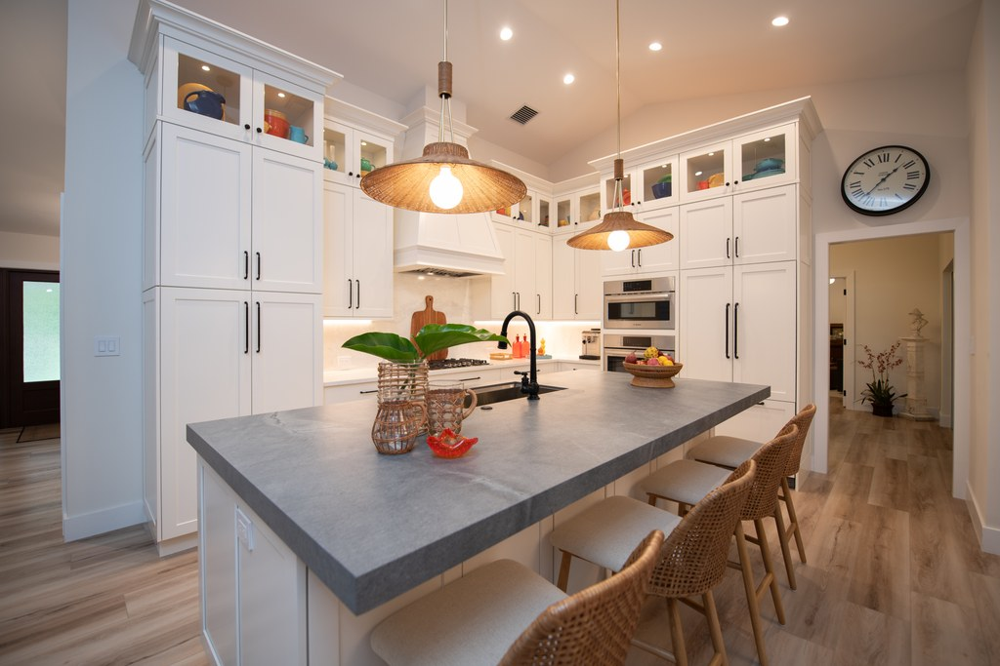
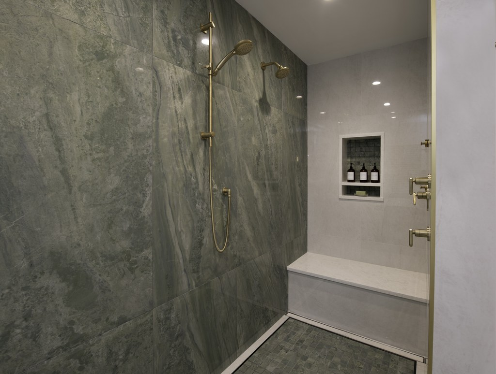
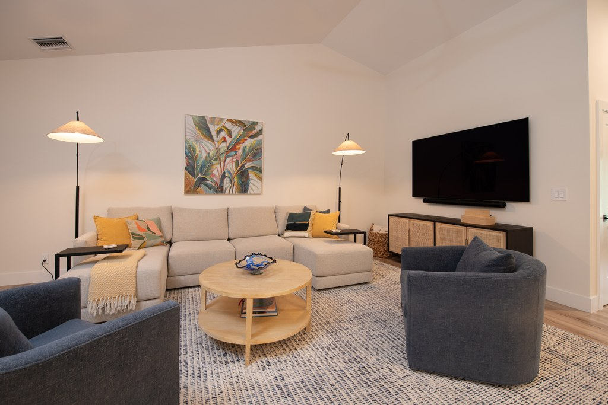

Interior design
Residential interior design,
start to finish.
More than thirty years of helping homeowners create spaces that reflect how they actually live. I work on every part of the process, from the first vision through to the final installation.
I have lived and worked in South Florida for many years, which gives me a particular understanding of the architecture here. I have watched the design of this place evolve over decades, and I have a real appreciation for the way our climate, our surroundings and our relaxed but sophisticated way of living shape how a home should work.
I bring that to every project, making interiors that feel current and fresh while staying timeless and personal. My hands-on approach and my ability to coordinate all of the moving pieces are what keep the process calm, and what make a finished home feel cohesive, comfortable and genuinely the client’s own.


The service
Every part of the process.
- 01
Vision and space planning
How the rooms should work, how they connect, and what the house wants to be before anything is chosen.
- 02
Selections and sourcing
Colors, furniture, fabrics, finishes and accessories, guided so that every detail works with the rest.
- 03
Installation
Coordinating the trades and the deliveries, and seeing the whole thing through to the finished room.
A recent project
Gabriel House




Start a conversation
Let’s talk about your home.
Tell me about the house and what you would like it to feel like. A call is the easiest place to start.